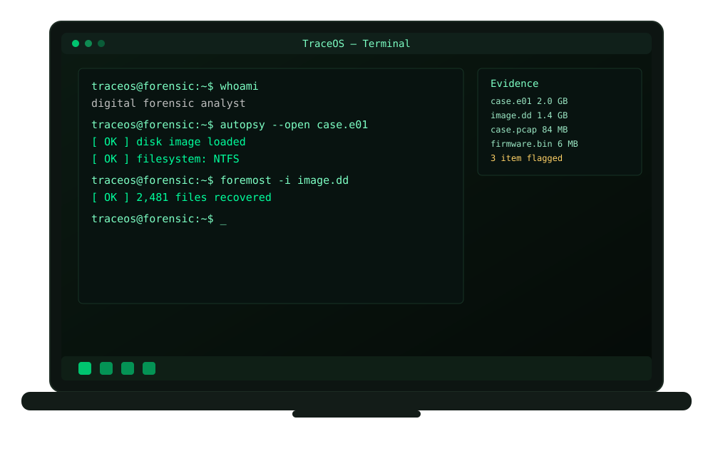
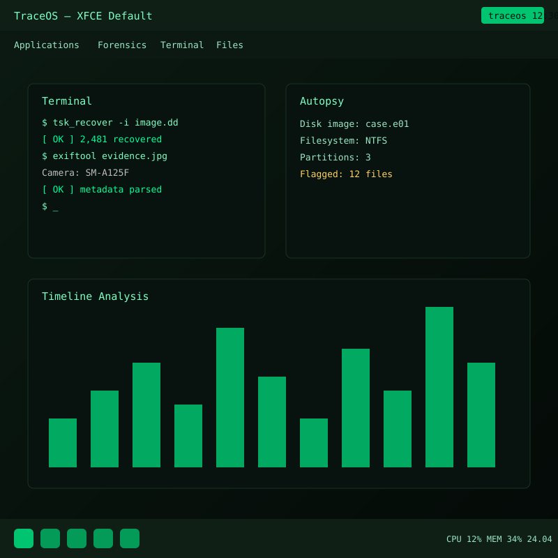
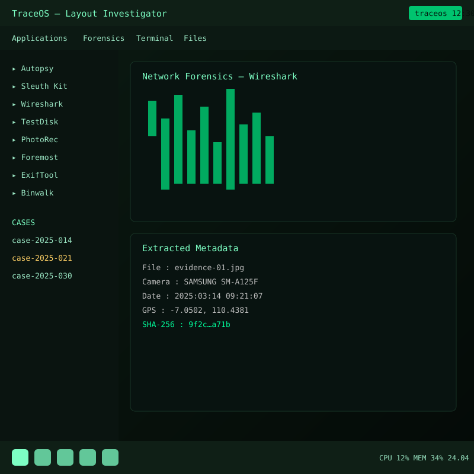

ZG
Zukhruf Gustdika Cahyatullah
Memimpin arah pengembangan distro serta mengoordinasikan proses remastering secara keseluruhan.
Anda bisa memasang tools forensik di Linux apa pun, tetapi semuanya harus dikonfigurasi manual. TraceOS dioptimalkan agar seorang analis bisa langsung duduk dan bekerja.
Versi TraceOS selalu dekat dengan Anda. Live USB, mesin virtual, bare metal, container, hingga cloud — semua tersedia sesuai kebutuhan investigasi.
Dengan metapackage yang dioptimalkan untuk tugas investigator, dan proses remastering ISO yang terdokumentasi, mudah membuat versi TraceOS sesuai kebutuhan.
Baik Anda baru mulai atau sudah berpengalaman, dokumentasi kami menyediakan panduan praktis, tips, dan resep untuk memaksimalkan TraceOS. Semua terbuka dan kontribusi diterima.
TraceOS lahir dari tim remastering Universitas Negeri Semarang dan tumbuh bersama komunitas pengguna digital forensics Indonesia.


Platform TraceOS berisi berbagai tools dan utilitas forensik. Dari akuisisi barang bukti hingga pelaporan akhir, TraceOS membantu investigator menganalisis sistem dan data secara menyeluruh.
traceos@forensic:~$ whoami
digital forensic analyst
traceos@forensic:~$ autopsy --open case.e01
[✓] disk image loaded
Jalankan TraceOS langsung dari USB tanpa menyentuh disk internal agar barang bukti tetap utuh.
$ traceos --info
base: Xubuntu 24.04 LTS (XFCE)
$ volatility -f memory.raw imageinfo
[✓] profile detected
Uji dan latih alur investigasi di dalam VM terisolasi sebelum diterapkan pada kasus nyata.
$ df -h /evidence
/dev/sdb1 2.0T 0% /evidence
$ foremost -i image.dd -o /out
[✓] carving complete
Instalasi permanen pada perangkat keras untuk performa penuh saat menangani citra disk berukuran besar.
Contoh alur investigasi di TraceOS — dari memuat citra disk, memulihkan berkas terhapus, membaca metadata, menganalisis lalu lintas jaringan, hingga mengekstrak firmware.
XFCE adalah lingkungan desktop yang ringan untuk sistem operasi mirip UNIX. Cepat dan hemat sumber daya, namun tetap menarik dan mudah digunakan.
XFCE terdiri dari paket-paket terpisah yang bersama-sama menyediakan seluruh fungsi desktop. Inilah lingkungan desktop bawaan TraceOS.

Susunan panel dan shortcut yang dioptimalkan untuk alur kerja investigator. Terminal, file manager, dan peluncur tools tersedia dalam satu layar.
Layout ini memudahkan perpindahan antar-tugas saat menangani citra disk, lalu lintas jaringan, dan metadata berkas secara bersamaan.
TraceOS dirancang sebagai distro Linux yang menyediakan berbagai tools digital forensics untuk membantu pengguna menganalisis file, memulihkan data yang terhapus, serta menginvestigasi aktivitas jaringan dalam satu sistem operasi.
| Nama Distro | TraceOS |
|---|---|
| Tema | Cybersecurity — Digital Forensics |
| Distro Dasar | Xubuntu 24.04 LTS |
| Lingkungan Desktop | XFCE |
| Alat Remastering | Cubic |
| Arsitektur | amd64 |
| Instansi | Universitas Negeri Semarang |
Tim remastering TraceOS dari Universitas Negeri Semarang.
Memimpin arah pengembangan distro serta mengoordinasikan proses remastering secara keseluruhan.
Menyiapkan dan mengintegrasikan paket-paket forensik utama ke dalam sistem.
Menyesuaikan tampilan desktop XFCE serta pengalaman pengguna TraceOS.
Menguji fungsionalitas distro dan menyusun dokumentasi penggunaan.
Berkas ISO sedang disiapkan. Video demo sudah dapat ditonton di bagian dokumentasi.
Citra instalasi TraceOS yang siap dijalankan sebagai live system atau dipasang ke perangkat.
Segera HadirVideo perkenalan TraceOS serta contoh penggunaan tools forensik di dalamnya.
Tonton videoInfo: bagian ini akan diperbarui dengan tautan ISO segera setelah berkas tersedia.